Rat Pack - Final Group Report
Authors: Thanh Dao, Valeriia Frolova, Aachal Grimire, Elijah Yong, Gracie Zheng
Last Updated: December 19th, 2024 @1:25PM
Abstract
This study investigates the relationship between various factors, including socioeconomic indicators and urban infrastructure, and rat populations in New York City. Our analysis reveals several key findings:
- Bait Programs: New York City’s Department of Health (DOH) bait programs have been effective in reducing yearly rat sightings over time.
- Socioeconomic Factors: We found minimal correlation between unemployment rates, median income, and rat sightings, indicating that socioeconomic factors may not be primary drivers of infestations.
- Outdoor Dining: There is a strong positive relationship between outdoor seating violations and rat infestations, particularly at restaurants with B and C grades.
- Urban Infrastructure: The presence of bins does not necessarily lead to increased infestations, though restaurants significantly impact rat populations.
- Public Transportation: Public transportation locations have minimal influence on rat sightings.
These findings underscore the complexity of urban rat infestations. Future research should explore targeted strategies for control, addressing specific drivers of infestation patterns.
Background
Rats in NYC are a notorious part of urban life, often associated with the city’s dense infrastructure and vast waste production. They live in sewers, subways, and parks, and have become a public health concern. Our team has taken interest in this issue, and we have chosen to research it further.
Overarching Question
To guide our research, we asked the following question: What influences the likelihood of rat infestations in NYC neighborhoods?
Specific Topics
To better answer our overarching question, we focused on the following topics:
- The effect of NYC DOH programs (report)
- The effect of annual income and unemployment of a neighborhood (report)
- The effect of restaurants (report)
- The effect of food scrap drop-off sites (report)
- The effect of NYC public transportation (report)
The corresponding, in-depth reports are linked with each topic.
Data Used
To aid in our research, we choose to utilize data from NYC Open Data, a reliable and frequently updated data source. Specifically, we used the following:
- Rat sightings
- Rodent inspection
- Restaurant inspection results
- Food scrap drop-off locations
- MTA subway stations
- MTA bus stops
- NYC incomes
Limitations
The data used in our analysis, though sourced from government agencies, has notable limitations. One key issue involves reporting and location-based biases in data sets like rat sightings and inspections. These rely on reported incidents, meaning actual rat activity may be underrepresented or over-represented depending on residents’ willingness or ability to report sightings. This leads to an incomplete picture of infestations across the city.
Additionally, some data sets lacked context, with non-descriptive or missing values in certain columns. While cross-referencing with other sources helped mitigate this, it posed challenges to achieving a thorough understanding of underlying patterns.
A significant gap was the absence of MTA data, critical for exploring the link between public transportation and rat activity. This forced reliance on extrapolations and assumptions, which may not fully capture transit-related nuances.
Despite these constraints, the data provided valuable insights into broad trends, forming a strong foundation for analysis.
Prior Work
Previous research conducted by the Department of Epidemiology and Biostatistics at the State University of New York has identified several factors associated with increased rat sightings in New York City. These factors include:
- Proximity to public spaces: Areas with high foot traffic and easy access to food sources are more prone to rat infestations
- Vacant housing units: These properties can provide ideal breeding grounds for rats.
- Low education levels: Lower education levels may correlate with lower awareness of sanitation practices and increased risk of attracting rats.
These findings suggest that targeted interventions, such as improved sanitation and maintenance of vacant properties, can help reduce rat populations in specific areas.
Building on previous research, we also decided to use reported rat sightings as the closest proxy for actual rat populations. We aimed to expand upon prior findings by exploring additional factors like DOH bait programs, income and unemployment, restaurant density, presence of food scraps, and transit density.
Findings
NYC DOH
We analyzed the impact of NYC DOH bait programs on rat sightings using data from OpenData, specifically focusing on rat sightings and rat inspections. The analysis uses a cause-and-effect approach, comparing the number of bait inspections in one year to rat sightings in the following year, and drawing conclusions based on a calculated correlation coefficient.
Overall, on a yearly basis, the data reveals a moderately strong correlation, suggesting that increased bait inspections are somewhat effective in reducing rat sightings. However, when examined on a monthly basis, no significant relationship was observed. This indicates that a monthly time frame may be too short to capture measurable effects.
Focusing instead on a yearly perspective across boroughs, the findings reveal that bait programs are highly effective in the Bronx, showing a strong correlation with reduced sightings. In contrast, no correlation was found in Queens, suggesting the programs may have little to no impact there.
The following are 2 sample figures created throughout this process, and display the correlation between bait inspections and next year’s sightings. To the left is the overall, while to the right is specifically for the Bronx. Further figures and analysis can be found in the NYC DOH report linked above.
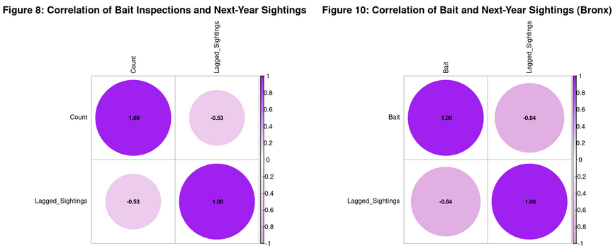
Overall, we can say that NYC DOH programs, specifically their bait initiative, are beneficial in decreasing the rat sightings in NYC on a yearly basis.
Income and Unemployment
We looked into the impact of socioeconomic factors on rat populations, more specifically how annual median income and unemployment rates influence rat sightings. To get a sense of this on a borough level, we created two plots that compared our variables to the number of rat sightings which both show little to no correlation between the two.
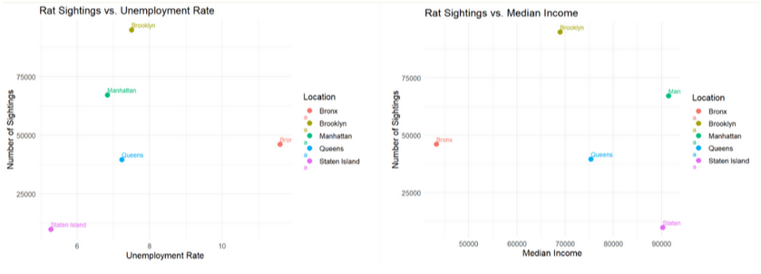
The issue we originally faced is that it is hard to draw conclusions from just five data points and unemployment rates/annual median income are not equally distributed throughout boroughs. To remedy this, we broke down the city into community districts which showed the variation in income and unemployment per borough.
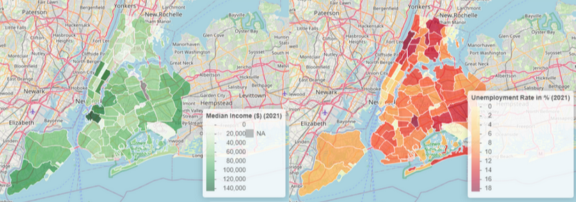
As we can see on the left, there are certain outliers like Williamsburg and the upper west side where the median income is vastly greater than other respective parts of Brooklyn and Manhattan. On the right, we can see that in terms of unemployment, there is a heavy concentration in the upper regions of Manhattan and across the Bronx.
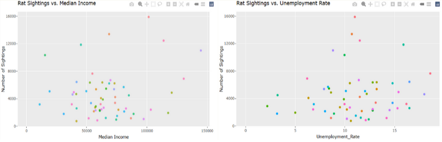
After taking a more granular look into communities and adding more data points, we still could not find any correlation between median income, unemployment rates and number of rat sightings. While removing outliers and running a correlation analysis, the correlation values are a 0.0085 between median income and rat sightings and 0.15 correlation between unemployment and rat sightings. Although there may be some minor relationship between unemployment and rat sightings, these findings suggest that other factors may play a more significant role in determining rat populations.
Restaurants
New York City’s ongoing battle with rat infestations is a multifaceted issue, with poor restaurant sanitation playing a significant role. By analyzing restaurant inspection grades, violation data, and rat activity across various boroughs, this report uncovers the connection between poorly rated restaurants (Grades B and C) and rat infestations. Additionally, we examine the impact of outdoor dining trends and restaurant density on rat activity, providing borough-specific insights to highlight areas of concern and potential solutions.
Poor Restaurant Sanitation
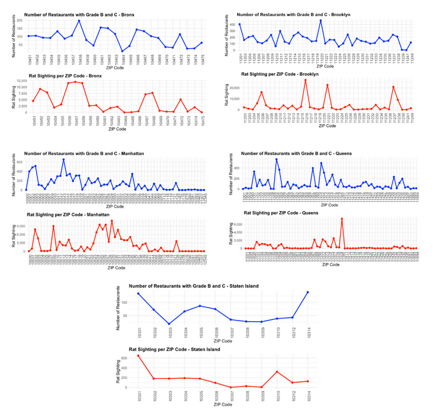
Brooklyn’s ZIP codes 11215 and 11222 have the highest rat densities (over 20,000), while the Bronx 10457 and 10458 show high densities (over 12,000), both linked to poor sanitation. Queens’ 11385 and 11373 also see peaks, while Manhattan’s 10013 and 10036 show moderate rat activity despite many poorly graded restaurants. Staten Island 10301 reports the lowest rat activity with minimal infestations.
Restaurant Density per Neighborhood
Our analysis reveals a positive correlation between restaurant density and rat infestations. Manhattan (~94,661 restaurants) and Brooklyn (~69,797) showed the highest rat activity, with 136,963 and 145,694 inspections, respectively, driven by increased food waste. The Bronx, an outlier, reported high rat activity (~96,498 inspections) despite moderate restaurant density (~23,274), indicating other factors like waste management may contribute. Conversely, Staten Island, with fewer restaurants (~9,218), reported minimal activity (~2,049 inspections), supporting the link between restaurant density and infestations.
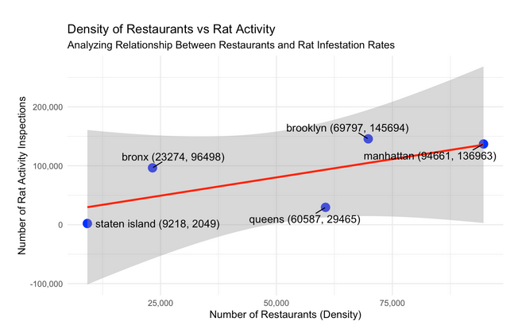 ### Outdoor Dining
The rise of outdoor dining in NYC during the COVID-19 pandemic brought new challenges in controlling rat populations. Comparing 2019 pre-pandemic data to post-COVID years, we observed a sharp increase in outdoor seating violations and rat infestations, peaking in 2023 and 2024 as outdoor dining expanded.
The article “The new Normal, Ah!! Rats!! by Elazar Sontag (Eater, December 14, 2021) supports our findings, explaining how restaurant reopenings and outdoor dining created food waste that fueled rat resurgence. Initially, rat populations declined during restaurant closures, but cities like Chicago, Los Angeles, and New Orleans faced similar challenges, showing this is a broader urban issue.
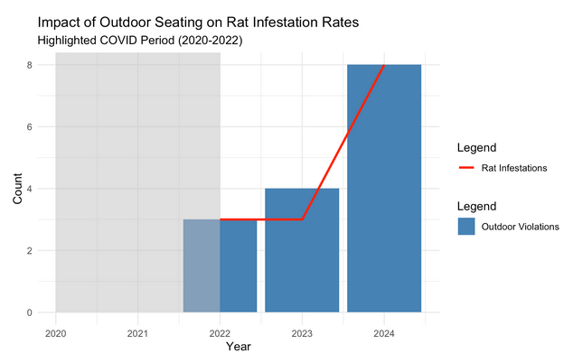
Our analysis highlights a strong connection between restaurant density, poor sanitation, outdoor dining, and rising rat activity in NYC, especially post-COVID. Boroughs like Brooklyn and the Bronx face significant infestations due to dense, poorly graded restaurants and improper waste management.
Food Drop-Off Sites
The findings of this analysis provide valuable insights into the relationship between food scrap drop-off sites and rat complaints in NYC, but they do not conclusively indicate that these sites are the direct cause of infestations.
Over the past five years, we observed a total of 98,141 rat complaints in proximity to food scrap locations, with an average of 773 complaints per ZIP code. A moderate correlation of 0.59 between the number of bins and complaints suggests a potential link, but this alone does not establish causation.
Seasonal trends reveal higher complaints during summer and early fall (June to October), likely driven by increased rodent activity in warmer months, while complaints drop significantly during the winter.
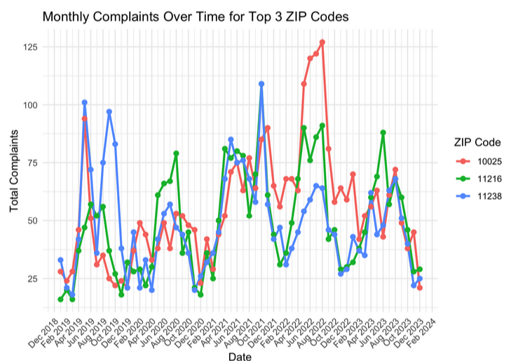
Year-to-year fluctuations show peaks in specific years, particularly in areas with frequent complaints, reflecting broader patterns that may be influenced by external factors.
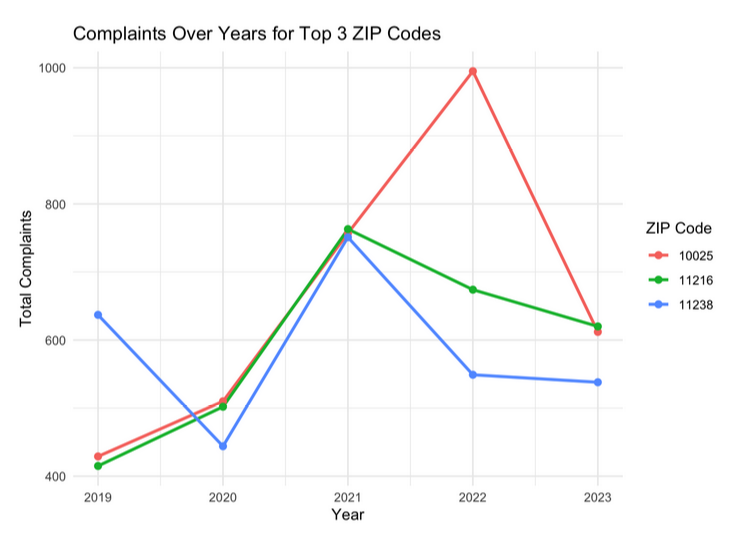
Importantly, the analysis highlights that the presence of bins does not always equate to higher infestations. ZIP codes with only one food scrap bin, such as those with a high complaints-to-bin ratio, demonstrate that factors beyond infrastructure—such as population density, socioeconomic conditions, and improper usage—also play a role.

Proper disposal, securely closed bins, and community compliance are key to this program’s success. With bins expanding citywide and mandatory composting rules and fines beginning in spring 2025, resident adherence is essential to overcoming current challenges.
Further research is needed to examine factors influencing rodent activity near food scrap bins, including socioeconomic conditions, pedestrian traffic, and bin design (e.g., metal vs. plastic). As the program grows, monitoring the impact of new rules and public compliance on rat complaints will offer valuable insights. These findings emphasize the need for a multifaceted strategy to tackle urban sustainability and public health challenges.
Public Transportation
We analyzed the potential relationship between public transportation and rat sightings, focusing on the MTA’s subway and bus systems. Examining the overlap between rat sightings and transit locations across NYC, we found a weak correlation between where rats are present and where people travel.
Our analysis explored rat sightings near subway stations and bus stops. Overall, sightings were distributed across the city, with no strong alignment to transit hubs. However, specific areas, such as parts of Staten Island and the Rockaways, showed some overlap with transit lines, suggesting localized patterns that warrant further investigation.
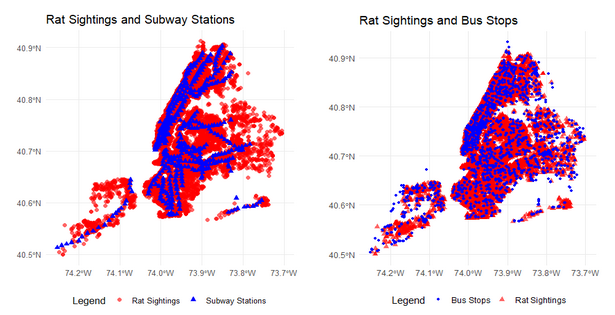
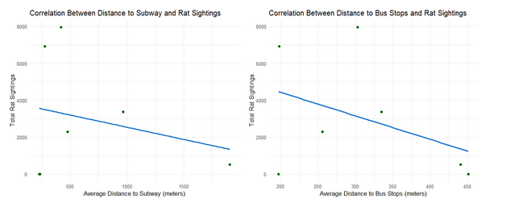
Through correlation analysis, location points are quantified by calculating the difference between the sighting and the station/subway. We can see that the further away the location of transportation is, the less sightings. However, there is actually a weak negative relationship for both, -.25 on subways and -.41 on buses. Therefore, rat sightings cannot be explained strongly by public transportation locations.
The second investigation looked at the number of public transportation per neighborhood compared to rat sightings per neighborhood.
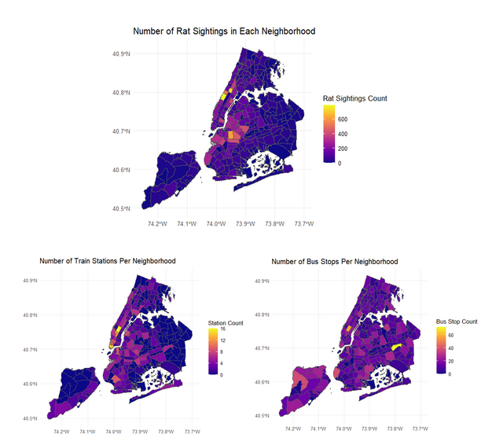
These graphs show an initial analysis of the count of each throughout NYC’s neighborhood. When we glance over these graphs, we see that sightings are more concentrated in the West side of Manhattan and the upper half of Brooklyn, where the train stations seem to also be slightly concentrated.
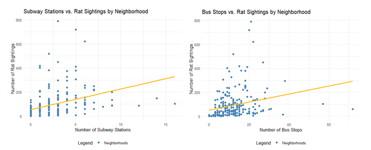
When we do our correlation analysis, as the number of stations increase, there is a slight increase in rat sightings. However, there is weak correlation, at .37 subways and .25 stops.
Though we see that there is a weak correlation between rat sightings and public transportation, as you read into the individual report, you may see how difficult it was to gather such data points. The data is not perfect so, many points were cleaned away but, if sighting data was wholly collected by the MTA agency and location points reported perfectly, the answer to this question may change.
Next Steps
To advance our efforts, we propose several key steps to improve outcomes and understanding. First, conducting public surveys will provide valuable insights into how rat infestations impact communities and reveal gaps in current strategies. Direct feedback from residents can help identify specific concerns and areas needing attention.
Second, enhancing data collection methods is essential. More detailed and accurate data will uncover the root causes of infestations, enabling precise and targeted interventions. Third, assessing the influence of public behavior and policies is critical. Analyzing effective practices and identifying areas for improvement will offer valuable lessons on what works and why.
Lastly, comparing NYC’s pest control approach with those of other cities can uncover successful strategies and best practices. Adapting proven solutions from cities with similar challenges can inspire innovative approaches tailored to NYC’s needs. Together, these steps will foster a more informed, data-driven strategy to address rat infestations effectively.